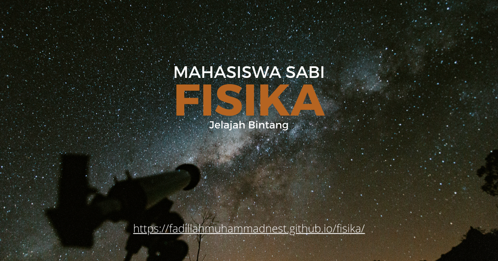

Metode Karakterisasi Material
Metode Karakterisasi Material: Mengungkap Sifat dan Struktur Material melalui Analisis Fisika Modern
Dalam major studi Fisika, mata kuliah Metode Karakterisasi Material mempelajari berbagai teknik untuk mengidentifikasi dan menganalisis struktur, komposisi, serta sifat suatu material. Mata kuliah ini menjadi penting karena pengembangan material modern tidak hanya bergantung pada proses pembuatannya, tetapi juga pada kemampuan memahami karakteristik material secara akurat hingga tingkat mikro dan nano.
Mata kuliah ini menarik karena memperlihatkan bagaimana instrumen dan metode fisika digunakan untuk “membaca” informasi tersembunyi di dalam material yang tidak dapat diamati secara langsung oleh mata manusia.
Apa Itu Metode Karakterisasi Material?
Metode Karakterisasi Material adalah bidang dalam fisika material yang mempelajari teknik dan prosedur analisis untuk menentukan struktur, morfologi, komposisi kimia, serta sifat fisik suatu material. Karakterisasi dilakukan menggunakan berbagai instrumen berbasis interaksi cahaya, elektron, radiasi, maupun gaya dengan material.
Dalam Fisika, karakterisasi material menjadi langkah penting untuk memahami hubungan antara struktur material dan performanya dalam aplikasi nyata.
Fokus yang Dipelajari dalam Metode Karakterisasi Material
Mata kuliah ini membahas berbagai teknik analisis material yang digunakan dalam penelitian dan industri, antara lain:
- Karakterisasi struktur kristal menggunakan difraksi sinar-X (XRD).
- Mikroskopi material seperti SEM, TEM, dan AFM untuk melihat morfologi dan struktur mikro.
- Spektroskopi material untuk mengetahui komposisi dan interaksi atom maupun molekul.
- Analisis sifat termal termasuk stabilitas dan perubahan fase material.
- Karakterisasi sifat mekanik seperti kekerasan, elastisitas, dan kekuatan material.
- Pengukuran sifat listrik dan magnetik pada material konduktif maupun fungsional.
Mahasiswa juga mempelajari cara mengoperasikan instrumen karakterisasi dan menginterpretasikan data hasil pengukuran secara ilmiah.
Peran Metode Karakterisasi Material dalam Studi Fisika
Dalam bidang Fisika, Metode Karakterisasi Material memiliki peran penting sebagai jembatan antara teori material dan eksperimen laboratorium. Mata kuliah ini memperlihatkan bagaimana struktur atomik dan sifat fisik material dapat dipelajari secara kuantitatif menggunakan teknologi modern.
Karakterisasi material menjadi fondasi bagi fisika material, nanoteknologi, fisika zat padat, dan rekayasa material, sekaligus memperkuat keterampilan mahasiswa dalam eksperimen dan analisis data.
Manfaat dalam Masyarakat, Riset, dan Dunia Kerja
Metode Karakterisasi Material memiliki kontribusi luas dalam pengembangan ilmu dan industri:
- Dalam masyarakat: membantu menghasilkan material yang lebih aman, tahan lama, dan berkualitas tinggi.
- Dalam riset: menjadi dasar pengembangan material baru untuk elektronik, energi, dan kesehatan.
- Dalam dunia kerja: membuka peluang pada laboratorium penelitian, industri manufaktur, material maju, semikonduktor, dan kontrol kualitas.
Karakterisasi material berperan penting dalam memastikan mutu produk serta mendukung inovasi teknologi berbasis material modern.
Tren Terkini dalam Metode Karakterisasi Material
Perkembangan karakterisasi material semakin pesat dengan dukungan instrumen dan komputasi modern, di antaranya:
- High-resolution microscopy untuk observasi struktur hingga tingkat atom.
- In-situ characterization yang memungkinkan pengamatan material saat mengalami perubahan secara langsung.
- Artificial Intelligence dalam analisis data material untuk mempercepat interpretasi hasil eksperimen.
- Karakterisasi material nano dan biomaterial sebagai bagian dari perkembangan material canggih.
Integrasi teknologi mikroskopi, spektroskopi, dan analisis berbasis AI menjadikan karakterisasi material semakin presisi dan menjadi pusat inovasi dalam sains material modern.
Penutup
Metode Karakterisasi Material merupakan mata kuliah penting dalam studi Fisika yang mengajarkan bagaimana sifat dan struktur material dapat dipahami melalui teknik analisis ilmiah yang presisi. Bidang ini tidak hanya memperkuat pemahaman mengenai material, tetapi juga mengembangkan keterampilan eksperimen dan interpretasi data yang sangat dibutuhkan dalam riset maupun industri.
Di era material canggih dan nanoteknologi, karakterisasi material menjadi salah satu bidang strategis dalam Fisika dengan kontribusi besar terhadap inovasi teknologi, pengembangan produk, dan kemajuan ilmu pengetahuan modern.
Mahasiswa Sabi
©Repository Muhammad Surya Putra Fadillah